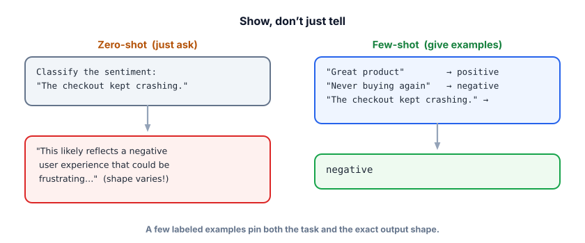
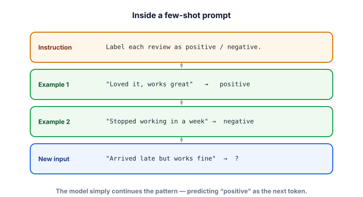

Few-shot prompting
The single highest-leverage upgrade to most prompts isn’t better wording — it’s a few good examples. Showing the model exactly what you want, with two or three demonstrations, often does what paragraphs of instruction can’t.
Why showing beats telling
Describing a format in words is lossy — “return the sentiment” leaves a hundred decisions unspecified (one word? a sentence? capitalized? what categories?). A couple of examples answer all of those at once, unambiguously. The model is, at its core, a pattern-continuer (Track 1); give it a clear pattern and it will continue it. This is why few-shot is the workhorse technique for classification, extraction, and any task with a specific output shape.
A zero-shot prompt asks the model to do a task with no examples. A few-shot prompt includes a handful of worked examples (input → desired output) before the real input; one-shot is the special case of exactly one. The model picking up the pattern from examples in the prompt — with no training or weight changes — is called in-context learning. The examples teach for this one request only.

Structurally, a few-shot prompt is just an instruction, then example pairs, then the new input left “open” for the model to complete:

Watch examples do three jobs at once
Drag the slider to add examples one at a time. Notice they don’t just clean up the format — they also define the categories and can bias the answer. The new input is deliberately mixed (“arrived late but works great”).
Few-shot in action
New input to classify: “Arrived late but the blender works great.”
In real code you keep examples in a list and assemble the prompt, so you can add, swap, or test them easily. (Uses the ask() helper from Lesson 2.1.)
examples = [
("Loved it, works great", "positive"),
("Stopped working in a week", "negative"),
("It's fine, nothing special", "mixed"), # teaches the 'mixed' category
]
def build_fewshot(review):
shots = "\n".join(f'Review: "{r}"\nSentiment: {label}' for (r, label) in examples)
return f"""Classify each review as positive, negative, or mixed.
{shots}
Review: "{review}"
Sentiment:"""
print(ask(build_fewshot("Arrived late but the blender works great"))) # -> mixedBecause the examples demonstrate the three labels and the exact two-line format, the model returns a clean, correctly-categorized answer — and you can drop the result straight into a database field.
- Representative & diverse. Cover the real range of inputs, not three near-identical ones. Each example should teach something new.
- Include edge cases. One “mixed” or “I don’t know” example defines that category and gives the model permission to use it.
- Format examples identically. Any inconsistency in your examples becomes inconsistency in the output.
- Watch label balance. If every example is “positive,” the model drifts positive. Balance the labels you show.
- Mind the cost. Examples are tokens in every request — use the fewest that make it reliable (often 2–5).
You’re building an intent classifier with labels: billing, technical, cancel. Which set of few-shot examples is best?
Few-shot examples are best at fixing which problem?
1. Write three few-shot examples for extracting {name, date} from messages like “Hey it’s Priya, let’s meet next Tuesday.” Include one message where the date is missing.
2. A teammate’s classifier outputs “positive” for almost everything. Their 4 few-shot examples are all positive reviews. Diagnose and fix.
3. Why can a single well-chosen “I don’t know” example dramatically reduce hallucination on unanswerable questions?
▸ Show solutions & reasoning
1. Keep the format identical and include the missing-date edge case so the model learns what to do when a field is absent:
Message: "Hey it's Priya, let's meet next Tuesday."
Output: {"name": "Priya", "date": "next Tuesday"}
Message: "This is Marcus — call me whenever."
Output: {"name": "Marcus", "date": null} # teaches the missing-date case
Message: "Sam here, deadline is March 3."
Output: {"name": "Sam", "date": "March 3"}The null example is doing real work: without it, the model would likely invent a date when none exists.
2. Diagnosis: label bias. All four examples are positive, so the demonstrated pattern is “output positive,” and the model dutifully continues it. Fix: balance the examples across the actual labels (some negative, some mixed) so the pattern includes choosing the right label, not just one label.
3. The model continues demonstrated patterns. If it’s never seen “I don’t know” as an acceptable output, that path has low probability, so it produces a confident guess instead. One example pairing an unanswerable question with “I don’t know” raises the probability of that response when appropriate — you’ve demonstrated that abstaining is a valid move. It’s a tiny change with an outsized effect on honesty.
The remarkable thing about few-shot is that no learning (in the training sense) happens at all — the weights never change. The model is simply conditioning its next-token predictions on the examples sitting in the context window. Researchers call this in-context learning, and it’s an emergent property of large models: a pattern in the prompt reshapes the output distribution as if the model had been briefly “taught.” Practically, that means your examples are powerful but ephemeral — they apply only to requests that include them, and they cost tokens every time.
That cost/limit framing tells you when to graduate to other tools. If you need many examples (dozens+), static few-shot gets expensive and bumps the context window — at which point you either retrieve the most relevant few examples per input (dynamic few-shot, which is just RAG over your example bank — Track 3) or fine-tune the behavior into the weights so you no longer pay for examples each call (Track 5). A clean mental ladder: zero-shot → few-shot → dynamic (retrieved) few-shot → fine-tune, climbing only when the rung below stops being enough.
Few-shot pins what the output looks like. The next technique improves how well the model reasons to get there — especially on multi-step problems: chain-of-thought.